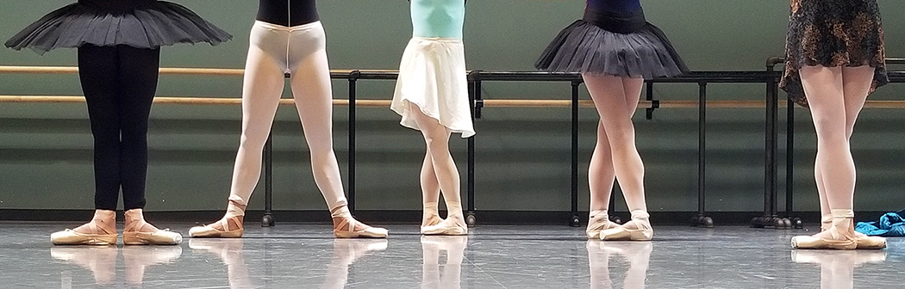

Ballerina-land is for those that love to dance.
Doesn't this just make you want to get up and dance?
| Ballet | Composer | Choreographer | Premiere Date |
|---|---|---|---|
| La Sylphide | Jean-Madeleine Schneitzhoeffer | Filippo Taglioni | 1832 at Salle Le Peletier |
| Nutcracker | Pyotr Ilyich Tchaikovsky | Marius Petipa and Lev Ivanov | 1892 at the Mariinsky Theatre |
| Giselle | Adolph Adam | Jean Coralli and Jules Perrot | 1841 at Salle Le Peletier |
| Swan Lake | Pyotr Ilyich Tchaikovsky | Julius Reisinger | 1877 at Bolshoi Theatre |
The world's oldest ballets are still the most popular ones. Among these are also Don Quixote, Romeo and Juliet and La Bayadere.
Demi: Half
Pirouette: To turn
Plié: To bend
En avant: Travelling forwards
Glissade: To slide (from 5th to 5th)
Pas de bourrée: Small or tight running steps
Pas de deux: Dance for two
There are many positions for a dancer to remember. The feet placement is the first learned so it becomes second nature. There are 5 basic feet positions and are simply named 1st position, 2nd position, 3rd position, 4th position and 5th position.
From left to right: 1st position, 2nd position, 3rd position, 4th position and 5th position.
Link to home Link to Ballerina